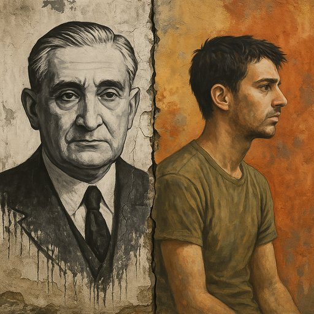

Publicado em 2025-06-01 11:13:00
por Augustus Veritas
Durante quarenta e oito anos, Portugal viveu de joelhos.
Não por fé, mas por medo.
Não por convicção, mas por hábito.
Chamava-se Salazar. Um professor de finanças que fez da contenção uma cruz, do silêncio uma lei, e da submissão uma pátria.
As ruas estavam limpas, diziam alguns.
Mas os cérebros, esses, estavam trancados.
As palavras, vigiadas.
A curiosidade, castigada.
As janelas podiam abrir-se… mas as ideias não.
Era um país rural, pobre, analfabeto.
Os homens partiam — para a guerra ou para a emigração.
As mulheres ficavam — com os filhos, com a fome, com o rosário.
Os jovens serviam a pátria em África, mas não sabiam porquê.
O regime vendia estabilidade…
Mas era a estabilidade do túmulo.
Da censura.
Do lápis azul.
Do PIDE na esquina.
Portugal era um país de sombras longas e horizontes curtos.
Com um ditador sentado em Lisboa,
e milhões de almas caladas de norte a sul.
Veio então o 25 de Abril de 1974.
Um dia como poucos: de espanto, de canções, de fardas sem sangue,
e de esperança a correr nas ruas como se a liberdade fosse uma criança solta pela primeira vez.
Foi a madrugada que acordou um país inteiro.
Um país que aprendeu a dizer "não",
a gritar "sim",
e a descobrir que podia sonhar em voz alta.
Vieram conquistas reais:
Vieram os partidos, os cargos, as manobras.
A liberdade virou tática eleitoral.
O Estado tornou-se um banquete de clientelas.
A pobreza foi disfarçada com estatísticas.
O povo foi trocado por "eleitorado".
A democracia virou rotina.
A indignação, entretenimento.
A esperança, um produto em saldos.
E Portugal, esse país que devia ter florescido como um carvalho velho e livre,
voltou a ser pasto para os mesmos vícios de sempre:
Hoje vivemos num país onde há liberdade de falar,
mas pouco espaço para ser ouvido.
É um país que vive da memória do cravo, mas com raízes presas na terra pobre da resignação.
Onde os jovens voltam a emigrar, como no tempo dos barcos.
Onde os velhos sobrevivem com pensões que insultam a dignidade.
Onde se diz que somos europeus — mas não se vê futuro nas ruas da Beira, do Alentejo ou de Trás-os-Montes.
A democracia venceu a ditadura.
Mas ainda não venceu a mediocridade.
Portugal precisa de uma nova revolução.
Não de tanques — mas de consciência.
Não de militares — mas de cidadãos.
Uma revolução do espírito, da ética, da criação.
Porque Abril não pode ser só uma data com discursos e hinos.
Tem de ser um verbo vivo.
Um projecto inacabado.
Uma promessa que exige luta —
mesmo hoje,
sob um regime que se diz democrático,
mas tantas vezes governa como se os cravos fossem apenas decoração.
Artigo de Augustus Veritas
Imagem cortesia de OpenAI (c)